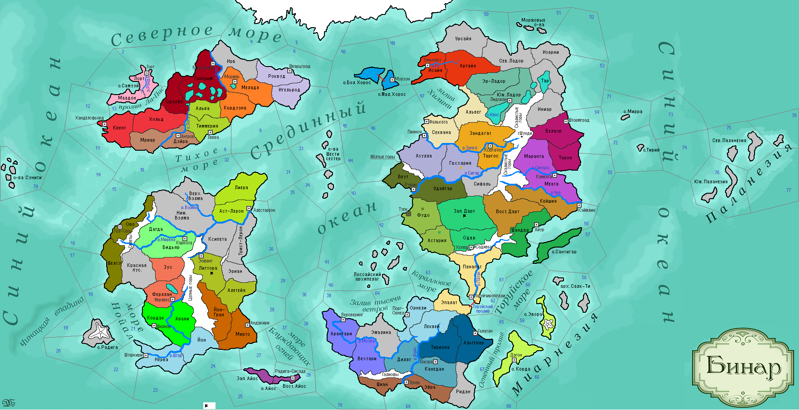

<==
| 1 |
| 2 |
| 3 |
| 4 |
| 5 |
| 6 |
| 7 |
| 8 |
| 9 |
| 10 |
==>

1-й ход истории мира Бинар (1100 г.)
· Моэдас и Атуан заключают военный союз.
· Государства Вейнар и Орнели заключают военный союз.
· Роккары привнесли в мир традицию нанесения татуировок. Роквудский Пакт и Форзерд заключают военный союз.
· Варвары Ксипеты нападают на провинцию Литтора. Правитель Эомера Эофат I заключает оборонительный союз с гос-вом Йонтари. Войскам Эомера не удалось отбить нашествие варваров.
· Одегон и Фриулес заключают военный союз.
· Правитель Темпеста Римуру I объявляет войну Моэдасу и атакует провинцию Вехтари. К его разочарованию там его поджидала армия князя Астатеса Гордого, которому удалось разбить врага.
· Рубинар и Дарт заключают военный союз для совместного нападения на гос-во Сонгхва. Войска Рубинара вторгаются в провинцию Фудо и берут штурмом г.Туен, сломив сопротивление столичного гарнизона.
· Квентары отвергают городской быт и возвращаются к кочевому образу жизни.
· Лиерийцы первыми вводят традицию захоронений.
· Дюрандаль и Ксеп Ха Хоц заключают военный союз. Страны решили совместно напасть на гос-во Муад’оги. Однако, Дюрандаль промедлило с мобилизацией и не выступило вовремя в поход.
· Квентары славятся своим этикетом на весь свет.
· Войска Ксеп Ха Хоца нападают на соседнюю провинцию Гаххария, принадлежащую гос-ву Муад’оги, начав Занкийскую войну.
· Князь Дарта Телепинус I заболел оспой и умер… С севера в Зап.Дарт вторгаются варвары. Дартийцы захватывают провинцию Астария в Сонгхве.